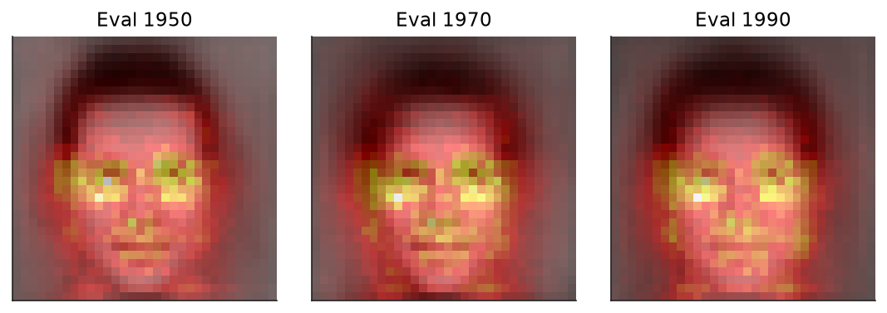
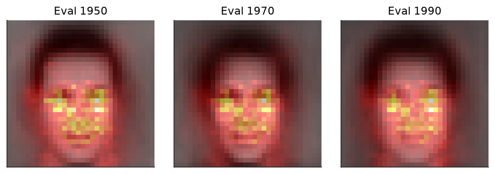
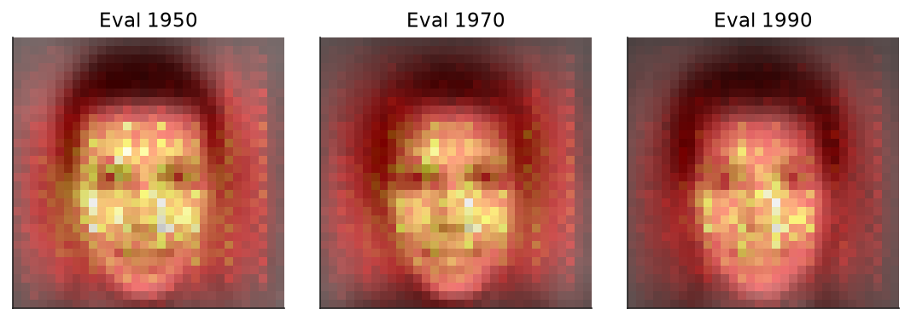
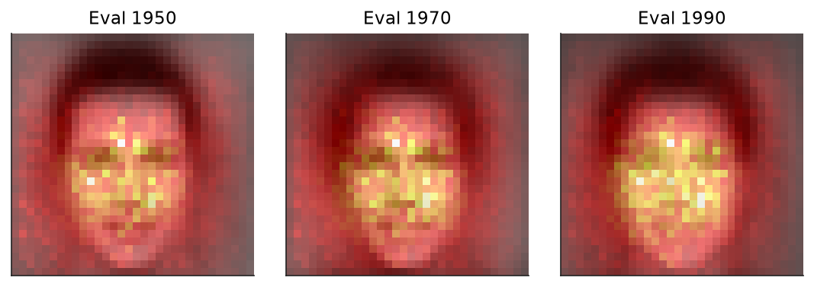
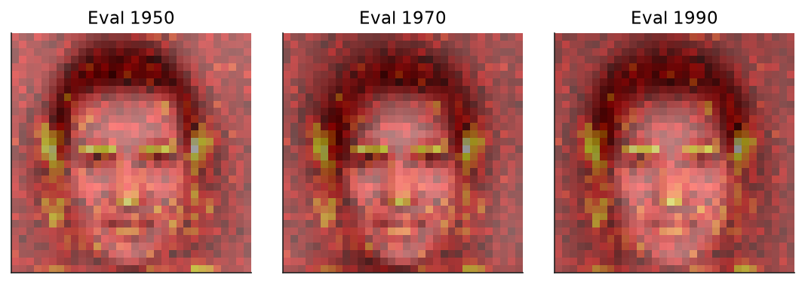
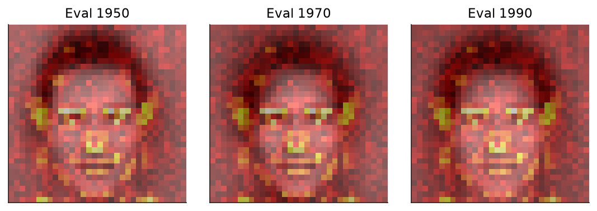

Yearbook
Yearbook
Frontal portraits, 1905–2013: covariate and concept drift, measured by accuracy.
YearbookA strong inductive bias improves accuracy but hurts temporal robustness. On Yearbook the CNNs and ResNets reach the highest in-distribution accuracy, near %, because their locality and translation invariance extract the features that best separate the classes. But those features are tied to the training period, so the very ones that make these models discriminative in-distribution are the first lost under drift, and these networks decay the most over time, up to percentage points.
Models with a weaker bias hold up better. MLP-S and the frozen pretrained encoders extract features less tied to any single period, so they decay far less, trading in-distribution accuracy for stability.
Each model is summarised by a temporal drift matrix. We divide the 1905–2013 timeline into \(K\) yearly slices, and for a training cutoff \(i\) fit a model \(f_i\) on the cumulative history \(\mathcal{D}_{\le i}=\bigcup_{k\le i}\mathcal{D}_k\), all data through year \(i\).
Each \(f_i\) is evaluated on every slice, and cell \((i,j)\) records its accuracy on year \(j\). The diagonal is in-distribution, the cells with \(j \gt i\) measure forward generalization to unseen years, and those with \(j \lt i\) re-test earlier data.
From the matrix we read three statistics.
\[ \mathrm{ID}=\operatorname*{mean}_{i}\, M_{ii}, \qquad \mathrm{F}=\operatorname*{mean}_{\,j>i}\, M_{ij}, \qquad \Delta=\mathrm{ID}-\mathrm{F}. \]\(\mathrm{ID}\) is in-distribution accuracy, \(\mathrm{F}\) is mean forward accuracy, and the decay \(\Delta\) is the accuracy lost off the diagonal. For lower-is-better metrics the decay is \(\mathrm{F}-\mathrm{ID}\), so a positive \(\Delta\) always denotes degradation.
Each model has its own drift matrix \(M^{(m)}\). Subtracting the cohort mean gives a deviation matrix \(M^{(m)}_{ij}-\bar{M}_{ij}\), the per-cell amount by which a model beats or trails the average.
In the deviation matrices the CNNs and ResNets sit well above the cohort in-distribution, but their lead narrows on the future as they decay faster than the average. MLP-S and the frozen encoders sit below the cohort in accuracy, yet they close that gap going forward, decaying more slowly than the average.
Across the Yearbook models, every architecture reaches high in-distribution accuracy, but they differ markedly in how quickly it decays under forward extrapolation.
Mean forward accuracy and decay, aggregated over all cutoffs:
\[ \mathrm{F}=\operatorname*{mean}_{\,j>i}\, M_{ij}, \qquad \Delta=\operatorname*{mean}_{i} M_{ii}\;-\;\mathrm{F}. \]The convolutional networks reach the highest in-distribution accuracy, near % for CNN-L and CNN-M, yet also the largest temporal decay, and points, so their future accuracy falls to % and %. The perceptrons span the widest range. MLP-S is the single most temporally robust model, points of decay, at a modest % future accuracy, while MLP-M and MLP-L reach higher future accuracy (% and %) at decays near and points.
The frozen pretrained encoders form a third regime, decaying by only to points but at lower absolute accuracy than the convolutional networks.
For a fixed cutoff \(i\): in-distribution accuracy \(M_{ii}\), mean future accuracy, and decay over the years that follow it:
\[ \mathrm{F}_i=\operatorname*{mean}_{\,j>i}\, M_{ij}, \qquad \Delta_i = M_{ii}-\mathrm{F}_i. \]The per-cutoff future accuracy and decay, averaged over the members \(m\) of each family \(g\):
\[ \mathrm{F}^{(g)}_i=\operatorname*{mean}_{m\in g}\mathrm{F}_i(m), \qquad \Delta^{(g)}_i=\operatorname*{mean}_{m\in g}\Delta_i(m). \]To compare how fast different models forget, it helps to collapse each drift matrix into a single forgetting curve, its accuracy against the lag \(\ell = j - i\), the number of years between the training year \(i\) and the evaluation year \(j\). At each lag we average the matrix over every training year:
\[ F(\ell) = \operatorname*{mean}_{i}\, M_{i,\,i+\ell}. \]The curve then reads as the accuracy a model keeps \(\ell\) years past its training data, whichever era that data came from, which isolates temporal distance on its own, apart from how hard any single period happened to be.
Lag \(\ell = 0\) is in-distribution accuracy, a model tested on its own period. Moving right shows how much it loses as the gap grows. The curves start at very different heights, the convolutional networks near 90% and the frozen encoders well below, and every one of them falls as the lag grows.
In distribution the architectures stand far apart, the strongly-biased convolutional networks well above the rest. As the lag grows this ordering dissolves, and every model converges to low-50s accuracy.
The features a strong inductive bias extracts, the very ones that make these models discriminative in-distribution, are also the ones lost first under drift. A bias locks onto the cues most predictive of the label within the training period, but those cues are the most specific to it, so they lose their meaning the fastest as it shifts. The sharper the in-distribution advantage, the quicker it collapses, until no architecture retains an edge.
The saliency maps trace which cues each architecture relies on within the training period; brighter regions carry the stronger attribution. The convolutional and residual networks concentrate their attribution on a few localized regions of the face, the eyes and its centre, the fine detail that most sharply separates the classes in a given period. This is the convolutional inductive bias at work, committing the model to a small set of discriminative local features.
The feed-forward network, lacking that bias, spreads its attention across the whole frame, the background included, a coarser reading not pinned to any single region. The same precision that lets the convolutional models read the discriminative detail is what ties them to it: the localized cues that lift in-distribution accuracy are the ones most exposed once the data drifts, while the diffuse attention of the feed-forward network is blunter but less bound to any single period.






A strong bias extracts the most discriminative features and leads in-distribution, but those features are the most sensitive to drift, so the strongest models decay the fastest. It is a kind of overfitting across time rather than across samples.
A frozen pretrained encoder concedes in-distribution accuracy for stability, decaying to points against the 12 to 14 of the convolutional networks trained on Yearbook itself. The self-supervised DINOv3 and MAE are the most robust, the supervised ImageNet-21k the least.